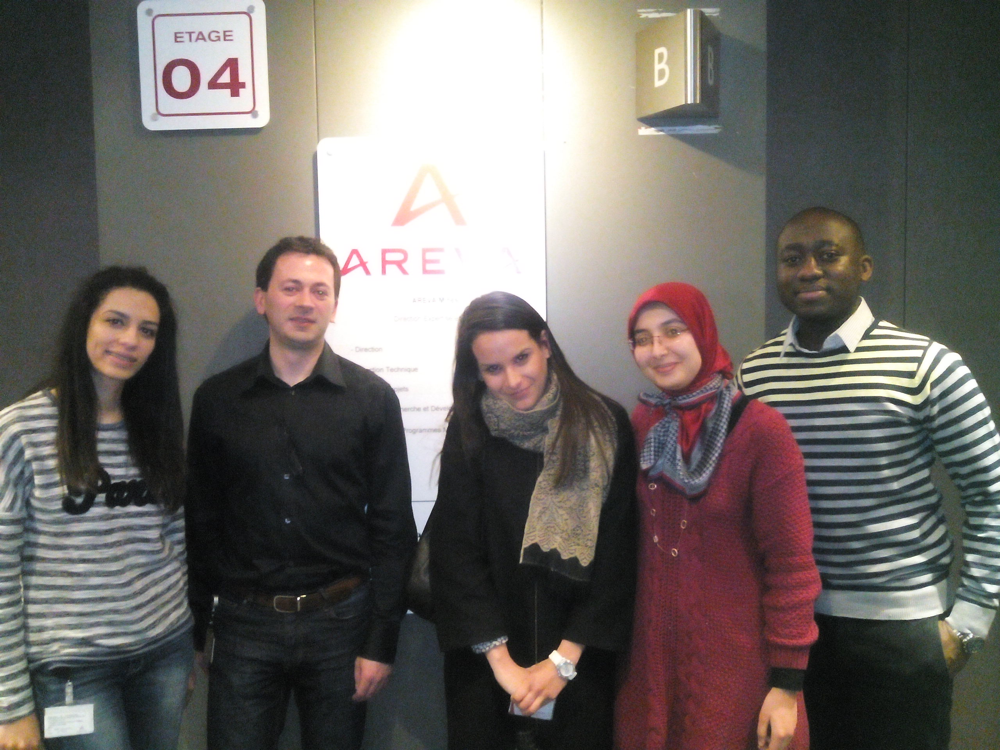

L'ENSG'
L'Ecole Nationale des Sciences Géographiques
Visite du 7 Mars 2016
Rencontre avec la MIG du Ministère de l'Ecologie,
du Développement Durable et de l'Environnement.

Visite du Mardi 7 Mars 2016
Accueil par le GIS Manager de Total à La Défense.

Visite du Mercredi 9 Mars 2016
Accueil par le GIS Manager d'Areva à La Défense.